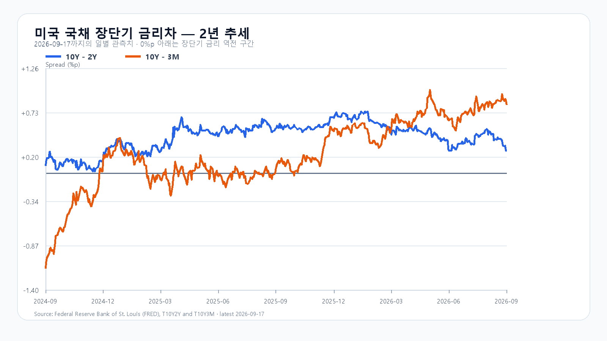

금요일 뉴욕 반도체주가 다시 올랐다. SOXX는 2.69%, SMH는 2.21% 상승했고, 마이크론은 3.92%, AMD는 2.70%, 엔비디아는 1.34%, 브로드컴은 2.97% 올랐다. 나스닥100도 강세로 마감했다. 장전 NXT에서 삼성전자와 SK하이닉스가 각각 1.34%, 1.13% 오르며 이 흐름을 받았다.
다만 반등이 곧바로 KOSPI 7,000선 안착을 뜻하지는 않는다. 미국 10년물 국채금리는 금요일 5.00%까지 올랐고, 브렌트유는 100달러 안팎에서 움직였다. 높은 할인율과 에너지 가격은 AI 투자와 반도체 밸류에이션에 동시에 부담을 준다. 오늘 한국장에서는 반도체주의 시초가보다 외국인·프로그램 수급이 그 상승을 지키는지를 먼저 봐야 한다. 미국 반도체 시세 · 미국 증시 마감
전 거래일 KOSPI는 6,885.70으로 출발해 6,914.08까지 오른 뒤 6,894.23에 마감했다. KODEX 레버리지는 109,265원으로 5.58% 상승했다. 이는 18일 장중에 이미 형성된 국내 반도체 강세다. 미국 금요일 상승분은 장전 기대를 높이는 보조 신호지만, 끝난 한국장의 상승을 같은 충격으로 다시 더하지 않는다. KOSPI · KODEX 레버리지
메모리의 중장기 방향과 당일 주가는 분리해서 본다. 서버용 메모리와 HBM 수요가 이어지는 가운데, 금요일 마이크론의 강세는 공급업체 쪽 기대를 지지한다. 반면 메모리 현물 가격은 품목별로 갈리고, 오늘의 국내 주가는 환율과 외국인 수급에 더 민감할 수 있다. TrendForce DRAM 현물
기본 시나리오는 KOSPI 6,850~7,050, 확률 50%다. 장전 반도체 상승이 이어져도 7,050 위에서는 외국인 현물과 프로그램의 동반 순매수가 필요하다. 이 조건이 충족되면 강세 범위 7,050 초과~7,200을 본다. 반대로 6,850을 다시 밑돌고 두 수급이 함께 순매도로 기울면 약세 범위 6,650~6,850 미만으로 전환한다.
| 종가 시나리오 | 범위·확률 | 15시 20분 확인 조건 | 전환 신호 |
|---|---|---|---|
| 기본 | 6,850~7,050 · 50% | 6,850 이상 · 7,050 이하 · 외국인 매도 확대 없음 | 범위 이탈 |
| 강세 | 7,050 초과~7,200 · 30% | 7,050 초과 · 외국인·프로그램 동반 순매수 | 7,050 아래 재진입 |
| 약세 | 6,650~6,850 미만 · 20% | 6,850 미만 · 외국인·프로그램 동반 순매도 | 6,850 회복 |
장중 고저 예상 범위는 6,550~7,250으로 둔다. 종가와 장중 범위의 목표 신뢰수준은 각각 90%이며 과거 적중률을 뜻하지 않는다. 대응 점수는 공격 30, 관망 50, 방어 20이다. KODEX 레버리지는 107,310원을 1차 지지, 109,265원을 반등 기준, 110,435원을 저항으로 본다.
장전 가격
| 항목 | 가격·변화 | 출처 시각 |
|---|---|---|
| KOSPI 전일 종가 | 6,894.23 · -0.04% | 2026-09-17 정규장 종가 |
| KODEX 레버리지 전일 종가 | 109,265원 · -0.09% | 2026-09-17 정규장 종가 |
| 삼성전자 NXT | 263,000원 · 0.77% | 2026-09-21T08:14:50.622692+09:00 |
| SK하이닉스 NXT | 1,871,000원 · 0.75% | 2026-09-21T08:14:50.622702+09:00 |
| 달러/원 하나은행 고시 | 1,388.00원 · 0.51% | 2026-09-21T07:53:38+09:00 |
| Nasdaq100 선물 | 30,016.75 · +0.33% | 2026-09-21T08:04:49+09:00 · 지연 시세 |
| S&P500 선물 | 7,732.25 · +0.26% | 2026-09-21T08:04:49+09:00 · 지연 시세 |
| 브렌트 선물 | 99.36 · +0.07% | 2026-09-21T08:03:13+09:00 · 지연 시세 |
| WTI 선물 | 95.96 · -0.12% | 2026-09-21T08:04:45+09:00 · 지연 시세 |
NXT · 환율 · Nasdaq100 선물 · S&P500 선물
NXT는 대체거래소 장전 거래, 미국 선물은 지연 시세다.

